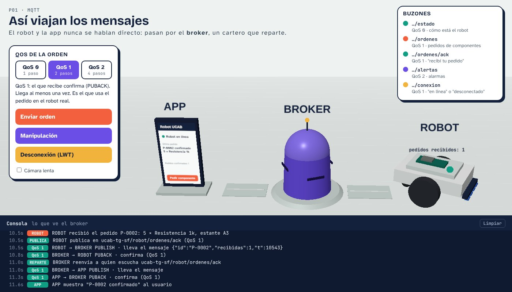
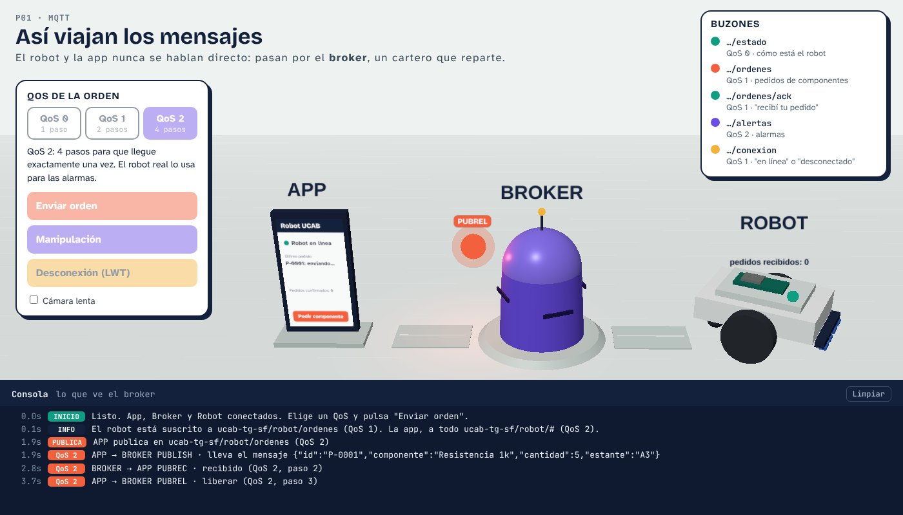

Prototipo P01 · Simulador 3D
Así viajan los mensajes entre la app y el robot
La app y el robot nunca se hablan directo. Los dos le entregan sus mensajes al broker, que es como un cartero, y él los reparte. Cada mensaje tiene un nivel de garantía (QoS): 0, 1 o 2.

Abrir el simulador ▶Funciona sin internet, en una sola página. Mejor en computadora. Se puede girar la vista arrastrando. El banco de pruebas y la simulación en Wokwi se conservan como registro de la Fase I (ver el Archivo Fase I).
Cómo usarlo
Cada botón muestra un caso real del robot. Abajo, la consola escribe lo que ve el broker.
- Elige el QoS0, 1 o 2 (teclas 0 1 2). Cambia cuántos pasos da cada mensaje.
- Enviar ordenUna esfera viaja App → Broker → Robot. El robot responde por otro buzón. Tecla espacio.
- ManipulaciónEl robot detecta que lo mueven y manda la alarma (QoS 2). La pantalla de la app se pone roja. Tecla M.
- Desconexión (LWT)El robot se apaga de golpe. El broker espera y avisa por él. Tecla L. Luego "Reconectar el robot".
Lo que se aprende
Se manda y ya
Un solo paso, sin confirmar. Es el del estado del robot: si se pierde uno, llega el siguiente en 2 segundos.
El que recibe confirma
Dos pasos: el mensaje y su confirmación (PUBACK). Llega al menos una vez. Es el de los pedidos.
Cuatro pasos, una sola vez
El mensaje rebota cuatro veces para que una alarma no llegue repetida ni se pierda. Es el de las alertas.
El broker avisa por el robot
Si el robot se cae, no puede despedirse. Por eso deja un mensaje listo al conectarse, y el broker lo publica cuando deja de oírlo.
Dos detalles que el simulador muestra y suelen sorprender: (1) si la app manda QoS 2 pero el robot se suscribió con QoS 1, el broker baja la entrega al robot a QoS 1; (2) si el robot está apagado, el broker guarda los pedidos QoS 1 y 2 y los entrega cuando vuelve, pero con QoS 0 los descarta.
Pasos de cada QoS
| QoS | Paquetes entre quien manda y el broker | Dónde se usa en el robot |
|---|---|---|
| 0 | PUBLISH | estado (cada 2 s) |
| 1 | PUBLISH, PUBACK | ordenes, ordenes/ack, conexion |
| 2 | PUBLISH, PUBREC, PUBREL, PUBCOMP | alertas |
El mismo recorrido se repite en el segundo tramo, del broker a quien recibe.
De dónde salen los datos
| Dato | Valor | De dónde sale |
|---|---|---|
| Tópicos | estado, ordenes, ordenes/ack, alertas, conexion | El sketch del robot y el banco de pruebas del P01 |
| QoS de cada tópico | 0, 1, 1, 2 y 1 | Los mismos |
| Suscripciones | Robot: ordenes con QoS 1. App: todo con QoS 2 | El sketch y el banco de pruebas |
| Mensajes | pedido, confirmación y alarma con los mismos campos | El sketch y el banco de pruebas |
| Espera de la última voluntad | 1,5 × 15 s = 22,5 s | El keepalive de 15 s del sketch y la regla de MQTT. En la prueba T6 con Wokwi el aviso llegó en 22 s |
En el simulador la espera de 22,5 s corre 5 veces más rápido para no aburrir. La barra lo indica.
Evidencias





Lo que el simulador no sabe
Es una animación del protocolo, no un broker de verdad: no usa la red, y los tiempos de viaje son de pantalla. Los tiempos reales (confirmación promedio de 4,1 s con Wokwi, 22 s para el aviso) vienen de las pruebas del P01 y se vuelven a medir con el ESP32 real.
La "Manipulación" muestra el camino de la alarma antirrobo. El sensor que la detecta todavía no está definido ni simulado aquí.
Código para el ESP32
El sketch de Wokwi adaptado al robot de verdad: mismos 5 tópicos y mismos QoS. Cambia el Wi-Fi (se escribe el tuyo), la prueba de alarma (botón BOOT de la placa o la letra a) y el estado (manda el voltaje real de la batería).
Revisado solo en el computador (sintaxis), no en un ESP32. El Wi-Fi de la UCAB pide usuario y contraseña y este código usa Wi-Fi con clave sola: para probar sirve la red interna del laboratorio o un hotspot. El broker usado es público.
Ver el código aquí
/*
P01 · MQTT en el ESP32 REAL (versión 3.0)
Tesis: Robot móvil para búsqueda y transporte de componentes (UCAB Telecom)
Es el sketch de Wokwi (codigo/sketch.ino, versión 2.1) adaptado al robot de verdad.
Los 5 tópicos y sus QoS NO cambian: son los mismos del simulador 3D y del banco de pruebas.
ucab-tg-sf/robot/estado robot -> app QoS 0 cómo está el robot (cada 2 s)
ucab-tg-sf/robot/ordenes app -> robot QoS 1 pedidos de componentes
ucab-tg-sf/robot/ordenes/ack robot -> app QoS 1 "recibí tu pedido"
ucab-tg-sf/robot/alertas robot -> app QoS 2 alarmas
ucab-tg-sf/robot/conexion robot y broker QoS 1 "en linea" / "desconectado" (retenido, es la LWT)
Qué cambió respecto a Wokwi:
1. El Wi-Fi ya no es "Wokwi-GUEST": pon tu red en WIFI_RED y WIFI_CLAVE (abajo). No subas la clave al repositorio.
2. Se quitó el canal 6 de WiFi.begin (era solo para Wokwi).
3. Prueba de alarma: además de escribir "a" en el Monitor Serie, se puede apretar el botón BOOT
de la placa (GPIO 0). Eso es el "pin de pruebas".
4. El estado manda el voltaje real de la batería por el divisor del GPIO 32 (antes era un 100 fijo).
IMPORTANTE:
- La red del Wi-Fi de la UCAB pide usuario y contraseña (WPA2-Enterprise). Este código usa Wi-Fi normal
(solo clave). Para las pruebas usa la red interna del laboratorio o el hotspot de un teléfono.
Si la UCAB es la única opción, hay que agregar el modo Enterprise: depende del resultado de la prueba H0.
- El broker broker.hivemq.com es PÚBLICO: cualquiera que conozca los tópicos los ve. Sirve para probar.
Para el sistema final hay que decidir un broker propio o con usuario y clave.
- GPIO 0 y GPIO 32 son PROPUESTAS: GPIO 0 no está en el mapa de pines del proyecto
(es el botón BOOT de la placa); GPIO 32 sí (batería).
Placa en Arduino IDE: "ESP32 Dev Module".
Librería: "MQTT" de Joel Gaehwiler (256dpi), la misma de Wokwi (ver codigo/libraries.txt).
*/
#include <WiFi.h>
#include <MQTT.h>
// ---------- 1. Red y broker ----------
const char* WIFI_RED = "TU_RED_WIFI"; // <- escribe aquí el nombre de tu red
const char* WIFI_CLAVE = "TU_CLAVE_WIFI"; // <- y su clave (no la subas al repositorio)
const char* BROKER = "broker.hivemq.com";
// ---------- 2. Tópicos (buzones) ----------
const char* T_ESTADO = "ucab-tg-sf/robot/estado";
const char* T_ORDENES = "ucab-tg-sf/robot/ordenes";
const char* T_ACK = "ucab-tg-sf/robot/ordenes/ack";
const char* T_ALERTAS = "ucab-tg-sf/robot/alertas";
const char* T_CONEXION = "ucab-tg-sf/robot/conexion";
// ---------- 3. Pines ----------
const uint8_t PIN_PRUEBA = 0; // botón BOOT de la placa: al apretarlo manda una alarma de prueba
const uint8_t PIN_BATERIA = 32; // divisor 100 kΩ + 22 kΩ desde la batería 3S (12,6 V quedan en 2,27 V)
const float DIVISOR = (100.0f + 22.0f) / 22.0f;
// Batería 3S: llena 12,6 V, alarma de batería baja 9,9 V (los de la simulación de P08).
// El porcentaje es una ESTIMACIÓN lineal entre esos dos valores, no una medida real de carga.
const float BAT_LLENA_V = 12.6f;
const float BAT_BAJA_V = 9.9f;
WiFiClient red;
MQTTClient mqtt(512);
// ---------- 4. Variables ----------
unsigned long ordenesRecibidas = 0; // cuántos pedidos han llegado
unsigned long numeroEstado = 0; // contador de mensajes de estado
unsigned long numeroAlarma = 0; // contador de alarmas enviadas
unsigned long ultimoEstado = 0; // cuándo se envió el último estado
unsigned long ultimoBoton = 0; // para evitar rebotes del botón
bool botonAntes = true; // el botón BOOT está en alto cuando no se aprieta
const int MAX_PENDIENTES = 60;
String idsPendientes[MAX_PENDIENTES]; // pedidos que faltan por confirmar
int cantidadPendientes = 0;
// Saca el valor de "id" de un pedido como {"id":"P-0007",...}
String leerId(const String &pedido) {
int inicio = pedido.indexOf("\"id\":\"");
if (inicio < 0) return "sin-id";
inicio += 6;
int fin = pedido.indexOf("\"", inicio);
if (fin < 0) return "sin-id";
return pedido.substring(inicio, fin);
}
float leerBateriaV() {
// analogReadMilliVolts usa la calibración de fábrica del ESP32
return analogReadMilliVolts(PIN_BATERIA) / 1000.0f * DIVISOR;
}
int bateriaPorcentaje(float v) {
float p = (v - BAT_BAJA_V) / (BAT_LLENA_V - BAT_BAJA_V) * 100.0f;
if (p < 0) p = 0;
if (p > 100) p = 100;
return (int)(p + 0.5f);
}
// ---------- 5. Al recibir un pedido ----------
void alRecibirMensaje(String &topico, String &mensaje) {
ordenesRecibidas++;
String id = leerId(mensaje);
Serial.println("Pedido #" + String(ordenesRecibidas) + " (" + id + "): " + mensaje);
if (cantidadPendientes < MAX_PENDIENTES) {
idsPendientes[cantidadPendientes] = id; // se confirma en loop(), no aquí
cantidadPendientes++;
}
}
// ---------- 6. Conexiones ----------
void conectarWiFi() {
Serial.print("Conectando al Wi-Fi");
WiFi.mode(WIFI_STA);
WiFi.begin(WIFI_RED, WIFI_CLAVE);
while (WiFi.status() != WL_CONNECTED) {
Serial.print(".");
delay(500);
}
Serial.println(" listo, IP " + WiFi.localIP().toString());
}
void conectarMQTT() {
Serial.print("Conectando al broker");
String idCliente = "robot-ucab-" + String((uint32_t)ESP.getEfuseMac(), HEX);
while (!mqtt.connect(idCliente.c_str())) {
Serial.print(".");
delay(1000);
}
Serial.println(" listo");
mqtt.publish(T_CONEXION, "en linea", true, 1); // retenido: quien llegue después lo ve
mqtt.subscribe(T_ORDENES, 1); // escuchar pedidos con QoS 1
}
void setup() {
Serial.begin(115200);
pinMode(PIN_PRUEBA, INPUT_PULLUP);
analogReadResolution(12);
analogSetPinAttenuation(PIN_BATERIA, ADC_11db);
conectarWiFi();
mqtt.begin(BROKER, 1883, red);
// keepAlive 15 s, sesión persistente (el broker guarda los pedidos si el robot se cae)
// y espera hasta 10 s las respuestas del broker antes de cortar
mqtt.setOptions(15, false, 10000);
mqtt.setWill(T_CONEXION, "desconectado", true, 1); // última voluntad (LWT)
mqtt.onMessage(alRecibirMensaje);
conectarMQTT();
Serial.println("Listo. Aprieta el botón BOOT o escribe la letra a en el monitor para enviar una alarma de prueba.");
}
// Manda una alarma de prueba (QoS 2)
void enviarAlarmaPrueba() {
numeroAlarma++;
String alarma = "{\"n\":" + String(numeroAlarma) + ",\"tipo\":\"antirrobo\",\"prueba\":true,\"t\":" + String(millis()) + "}";
mqtt.publish(T_ALERTAS, alarma, false, 2);
Serial.println("Alarma #" + String(numeroAlarma) + " enviada");
}
// ---------- 7. Ciclo principal ----------
void loop() {
mqtt.loop();
delay(10);
// Reconexión automática
if (WiFi.status() != WL_CONNECTED) conectarWiFi();
if (!mqtt.connected()) conectarMQTT();
// Confirmar un pedido pendiente por vuelta (QoS 1)
if (cantidadPendientes > 0) {
String id = idsPendientes[0];
for (int i = 1; i < cantidadPendientes; i++) idsPendientes[i - 1] = idsPendientes[i];
cantidadPendientes--;
String ack = "{\"id\":\"" + id + "\",\"recibidas\":" + String(ordenesRecibidas) + ",\"t\":" + String(millis()) + "}";
mqtt.publish(T_ACK, ack, false, 1);
}
// Estado cada 2 segundos (QoS 0)
if (millis() - ultimoEstado > 2000) {
ultimoEstado = millis();
numeroEstado++;
float vbat = leerBateriaV();
String estado = "{\"n\":" + String(numeroEstado) + ",\"estado\":\"espera\",\"bateria\":" + String(bateriaPorcentaje(vbat)) +
",\"bateria_v\":" + String(vbat, 2) + ",\"ordenes\":" + String(ordenesRecibidas) + ",\"t\":" + String(millis()) + "}";
mqtt.publish(T_ESTADO, estado, false, 0);
}
// Alarma de prueba: botón BOOT (pin 0, activo en bajo) o la letra "a" en el monitor serie
bool boton = digitalRead(PIN_PRUEBA);
if (!boton && botonAntes && millis() - ultimoBoton > 300) {
ultimoBoton = millis();
enviarAlarmaPrueba();
}
botonAntes = boton;
if (Serial.available()) {
char letra = Serial.read();
if (letra == 'a') enviarAlarmaPrueba();
}
}
El código del simulador
- protocolo.js: los tópicos, los QoS, los pasos de cada uno y la espera de la última voluntad.
- main.js: la escena 3D, los botones y la consola.
- pruebas.mjs: comprueba en Node los pasos de cada QoS (
node pruebas.mjs).
Hecho con el kit teardown (licencia MIT, ver LICENSE) y three.js.